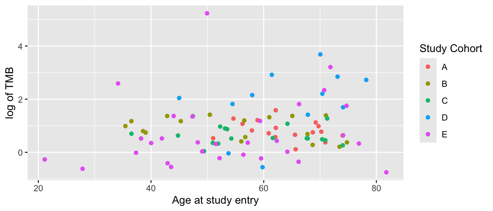

14 Plotting with Labels
New in v0.1.1 is the replace_plot_labels function. This will replace variable names on the x- and y-axes and plot legends with variable labels, if available. If variable labels are not available then a nice version of the variable names will be displayed. The replace_plot_labels function accepts a ggplot object
Create a plot and replace labels

This also works:

This will not work - the plot needs to be fully evaluated before it is passed to replace_plot_labels.